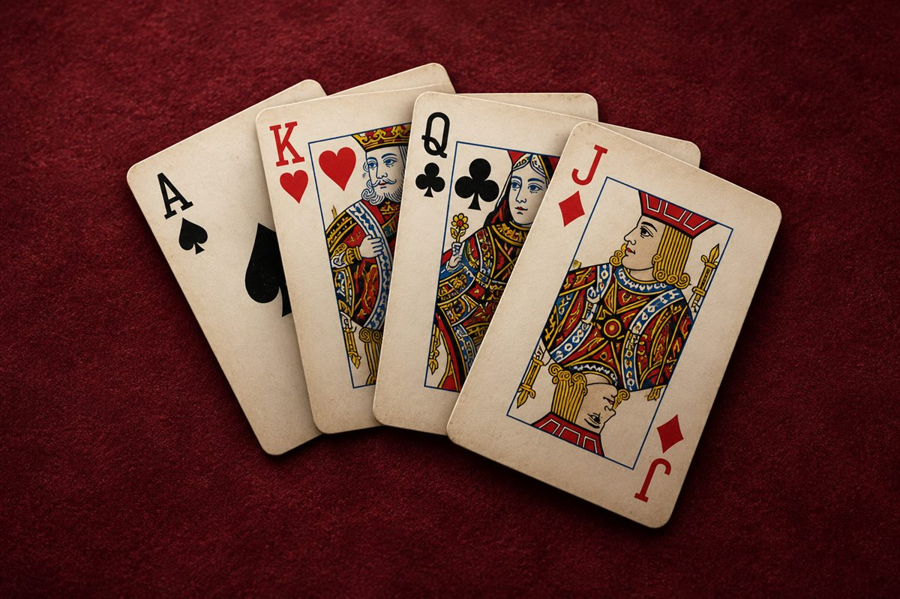

Собирай друзей. Играй в любимое.

Перевод картой того же достоинства
Включая вас
Партия прервётся, результат не запишется.
Или киньте чем-нибудь
Цель — остаться без карт. Кто остался с картами, тот дурак.
Козырная масть показана рядом с колодой. Козырь бьёт любую карту другой масти.
Отбиваться нужно картой той же масти, но старше — или любым козырем.
Подкидывать можно только карту того же достоинства: лежит семёрка — подкидывайте семёрку.
Первым ходит тот, у кого младший козырь. Игра сама скажет, у кого он.
Светлую карту с салатовой чертой можно выбрать сейчас, серую — нельзя.
Нажмите на строку внизу экрана — покажем, что было, пока вы не смотрели.
Играют трое и больше: подкидывают по очереди, по кругу. Ваше слово — подкиньте или нажмите «Пас».
Переводной: вместо того чтобы крыть, положите карту того же достоинства — отбиваться будет сосед.
Парами, 2 на 2: напарник сидит напротив. Ему не подкидывают, и проигрывают вдвоём — дурак тут не человек, а пара.
Парами: если напарник вышел без карт, его место за столом остаётся — и вы играете за двоих. Поэтому ход к вам приходит дважды за круг, а на плашке пустого места написано, кто за него играет.
Рубашка карт
Сукно стола
Один создаёт игру и говорит код, второй входит по коду. Играть вдвоём можно, пока включён компьютер того, кто запускает игру.
С кем вы играли
Адрес спрашивают у того, кто запустил сервер игры.
Продиктуйте или перешлите этот код другу.
Ждём, когда друг войдёт…
Наберите код, который вам сказал друг.